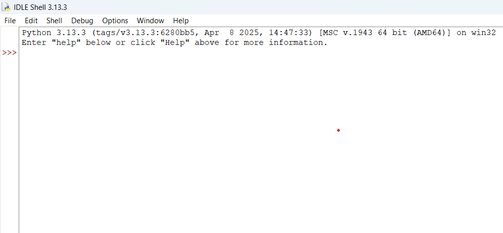

O que é Python?
Python é uma linguagem de programação muito usada no mundo todo, tanto por iniciantes quanto por profissionais. Ela é conhecida por ser:
- Fácil de aprender
- Usada em várias áreas (dados, jogos, sites, automações)
- Gratuita e de código aberto
- Com uma comunidade enorme ajudando a evoluir a linguagem
Onde o Python é usado?
Com Python, você pode:
- 💻 Criar sites
- 📊 Analisar dados e gerar gráficos
- 🤖 Trabalhar com inteligência artificial
- 🎮 Criar jogos
- 🛠️ Automatizar tarefas no seu computador
Como instalar o Python?
Para começar, acesse o site oficial do Python: www.python.org
Baixe a versão mais recente para seu sistema operacional (Windows, macOS ou Linux). Durante a instalação, marque a opção "Add Python to PATH" e clique em Install Now.
O que é uma IDE?
Uma IDE (Integrated Development Environment ou Ambiente de Desenvolvimento Integrado) é um programa que ajuda a escrever, testar e executar códigos de forma mais organizada.
As IDEs costumam oferecer recursos como:
- Realce de sintaxe (códigos coloridos)
- Sugestões automáticas de código
- Execução com apenas um clique
- Detecção de erros em tempo real
Algumas IDEs muito usadas por quem programa em Python são:
- PyCharm — muito completo, usado por profissionais
- Visual Studio Code (VS Code) — leve e flexível
Mas neste tutorial, vamos usar o IDLE
O IDLE é uma IDE simples que já vem junto com a instalação do Python. Ele é leve, fácil de usar, e ideal para quem está começando. Com ele, você poderá rodar todos os exemplos deste tutorial sem instalar nada a mais.
Dica: após instalar o Python, procure por IDLE no menu do seu sistema e abra o programa.

Preciso instalar o Python ou posso programar online?
Neste tutorial, vamos usar o IDLE, que já vem junto com a instalação do Python.
Mas, se você preferir programar direto no navegador, sem precisar instalar nada, pode usar o Google Colab.
O Google Colab permite escrever código em blocos, salvar seus projetos no Google Drive e compartilhar com outras pessoas facilmente. Ele é muito usado para trabalhos com dados, ciência, e aprendizado de máquina.
Seu primeiro código em Python
Abra o IDLE e digite o seguinte código:
print("Olá, mundo!")Ao pressionar Enter ou clicar em "Run", o Python exibirá na tela:
Olá, mundo!Parabéns! 🎉 Você acabou de escrever e executar seu primeiro programa em Python!
Indentação no Python
Diferente de outras linguagens que usam chaves ({}) para definir blocos de código, o Python usa a indentação (espaços à esquerda da linha) para indicar o que pertence a cada bloco.
Por exemplo, ao escrever uma condição if, o que estiver indentado (com espaço ou tabulação) abaixo dela será considerado parte do bloco:
idade = 18
if idade >= 18:
print("Você é maior de idade!")Se você esquecer de indentar ou usar uma indentação errada, o Python vai mostrar um erro:
if idade >= 18:
print("Você é maior de idade!") # ❌ Erro de indentaçãoQuantos espaços usar?
A convenção mais usada é 4 espaços por nível de indentação. Evite misturar Tab e Espaços no mesmo arquivo, pois isso pode causar erros difíceis de detectar.
Dica: As IDEs como IDLE ou VS Code já fazem essa indentação automaticamente para você!